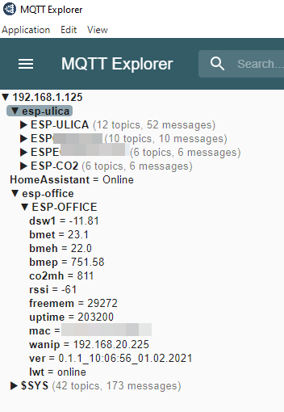

Как подключить второй MQTT брокер к Home Assistant или мостовое (bridge) соединения MQTT брокеров Mosquitto
Привет Пикабу!
В этом посте рассмотрим реализацию подключения второго MQTT брокера к Home Assistant или мостовое (bridge) соединения MQTT брокеров Mosquitto.
Сразу опишу своё исходное ТЗ (задачу), решение которой будет описано в этом посте, чтобы вы могли понять на сколько эта "инструкция" подходит под решение именно вашей задачи (задач).
Имеется:
1) IoT устройства на ESP8266 (ESP32) дома (в локальной сети);
2) IoT устройства на ESP8266 (ESP32) НЕ дома (internet / за nat);
Задача: - собирать данные с датчиков установленных на этих устройствах (и/или управлять подключенными модулями) в единый центр. В качестве единого центра уже выбрана система "Умного дома" Home Assistant.
Дополнительное условие (требование): - порты для взаимодействия с сервером, где установлен "Умный дом" доступны только в локальной сети. Исключение только для портов 80, 433-й для HTTPS для "Яндекс.Станции" и 500, 4500 для VPN, но решения связанные с VPN по ряду причин не рассматриваются.
В качестве решения моей задачи был выбран протокол обмена сообщениями между устройствами - MQTT. А в качестве брокера сообщений был выбран Eclipse Mosquitto.
Установка на локальный сервер (вместе/рядом с "Умным домом") и базовая настройка MQTT брокера Eclipse Mosquitto была проведена по этой инструкции. Все локальные IoT устройства общаются с Home Assistant через него.
В качестве сервера для второго MQTT брокера вне дома был выбран бесплатный VPS - сервер от Oracle. Брокер также был установлен по этой инструкции.
Осталось "научить" Home Assistant "общаться" с двумя MQTT брокерами)))
Для этого был найден "обходной путь" из документации Eclipse Mosquitto, который имеет название bridge (мост). Т.е. фактически мы сделаем мостовое (bridge) соединения внешнего MQTT брокера с локальным (домашним), через которое они будут "общаться". А наш локальный MQTT брокер как и раньше будет "общаться" с Home Assistant, позволяя через себя (мост | bridge) "общаться" Home Assistant со вторым (внешним) брокером.
На этапе написания последних двух предложений мне вспомнился этот комментарий ))))
Итак, поехали выполнять задачу)))
Открываем через WinSCP или PuTTY конфигурационный файл локального Eclipse Mosquitto для редактирования (я предпочитаю для этих целей использовать WinSCP).
Путь к файлу, если вы устанавливали брокер про моей инструкции:
/etc/mosquitto/mosquitto.conf
И вставляем туда, предварительно отредактировав под свои учётные данные, такой текст:
# HUNY External Bridge Configuration
connection external-bridge
address 193.125.125.125:1883
cleansession true
topic +/# in PICABU/ ""
try_private true
remote_username pickabu
remote_password Pikabu1234
address 193.125.125.125:1883 - adress(ip) вашего второго брокера.
remote_username pickabu - логин вашего второго брокера.
remote_password Pikabu1234 - пароль вашего второго брокера.
topic +/# in PICABU/ "" - здесь "+" означает забирать все топики со второго брокера, PICABU - так будет называться топик в первом брокере (в моём случае - локальном), где будут публиковаться все топики со второго.
topic [read|write|readwrite|deny] <topic>
The access type is controlled using "read", "write", "readwrite" or "deny". This parameter is optional (unless <topic> includes a space character) - if not given then the access is read/write. <topic> can contain the + or # wildcards as in subscriptions. The "deny" option can used to explicity deny access to a topic that would otherwise be granted by a broader read/write/readwrite statement. Any "deny" topics are handled before topics that grant read/write access.
Расширенные или просто другие настройки смотрим в документации и делимся в комментариях своими вариантами ;-)
ПОСЛЕ ВНЕСЕНИЯ ПРАВОК В КОНФИГ - ПЕРЕЗАПУСТИТЕ ЛОКАЛЬНЫЙ БРОКЕР.
Проверить, что всё работает (Первый брокер публикует все топики второго брокера) переде тем как вносить правки в Home Assistant можно, например, с помощью программы MQTT Explorer:

Напомню, если забыли или не знали ))), базовые настройки Mqtt в Home Assistant:
1) В файле configiration.yaml указываем путь к настройкам mqtt:
mqtt: !include mqtt.yaml
2) В файле mqtt.yaml указываем параметры подключения к своему локальному брокеру:
ВАЖНО СОБЛЮДАТЬ ТАБУЛЯЦИЮ!!!
broker: 192.168.1.150
port: 1883
client_id: home-assistant
keepalive: 60
username: Local
password: Local7777
protocol: 3.1
birth_message:
topic: "HomeAssistant"
payload: "Online"
qos: 1
retain: true
will_message:
topic: "HomeAssistant"
payload: "Offline"
qos: 1
retain: true
ВАЖНО СОБЛЮДАТЬ ТАБУЛЯЦИЮ!!!
3) в sensor.yaml указываем свои параметры "топиков" локального и второго брокера:
ВАЖНО СОБЛЮДАТЬ ТАБУЛЯЦИЮ!!!
# Платформа MQTT брокер.
# ESP8266 на улице:
- platform: mqtt
state_topic: "esp-ulica/ESP-ULICA/bmet"
name: Тепература на улице (Самара Дом)
unit_of_measurement: "°C"
device_class: temperature
- platform: mqtt
state_topic: "esp-ulica/ESP-ULICA/bmeh"
name: Влажность на улице (Самара Дом)
unit_of_measurement: "%"
device_class: humidity
- platform: mqtt
state_topic: "esp-ulica/ESP-ULICA/bmep"
name: Давление на улице (Самара Дом)
unit_of_measurement: "mmHg"
device_class: pressure
- platform: mqtt
state_topic: "esp-ulica/ESP-ULICA/bhl"
name: Освещённость на улице (Самара Дом)
unit_of_measurement: "lm"
device_class: illuminance
# ESP8266 в офисе:
- platform: mqtt
state_topic: "esp-office/ESP-OFFICE/dsw1"
name: Тепература на улице (ОФИС)
unit_of_measurement: "°C"
device_class: temperature
- platform: mqtt
state_topic: "esp-office/ESP-OFFICE/bmet"
name: Тепература в ОФИСЕ
unit_of_measurement: "°C"
device_class: temperature
- platform: mqtt
state_topic: "esp-office/ESP-OFFICE/bmeh"
name: Влажность в ОФИСЕ
unit_of_measurement: "%"
device_class: humidity
- platform: mqtt
state_topic: "esp-office/ESP-OFFICE/bmep"
name: Давление на улице (ОФИС)
unit_of_measurement: "mmHg"
device_class: pressure
- platform: mqtt
state_topic: "esp-office/ESP-OFFICE/co2mh"
name: Углекислый газ в ОФИСЕ
unit_of_measurement: "ppm"
ВАЖНО СОБЛЮДАТЬ ТАБУЛЯЦИЮ!!!
Ну и в завершении настройте панель Lovelace в Home Assistant на своё усмотрение.
Например так (тестовый вариант):
На этом у меня В С Ё.